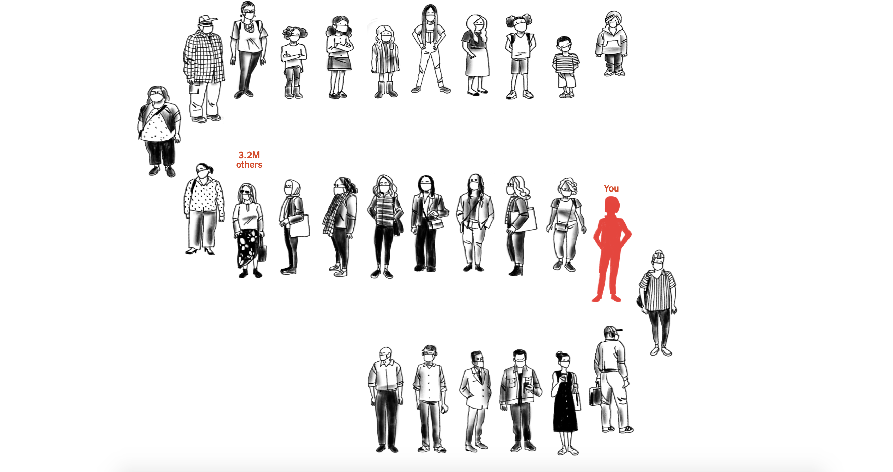

Kara Wilson
Email me!
Work I've Done
+ Work I've Done
Hello —
I am a digital product designer, visual designer, and former 5th grade teacher based in New York. I am currently completing my Master's degree in product design at Parsons.
This space was created to make room for a comprehensive, straightforward explanation of who I am and what I value; if you'd like to see what I've done, there's a blue button in the top right corner that will take you to that room of the internet. But if you'd like to stick around and hang out to hear about the way I think, I'd love to have you.
A couple things —
As I mentioned, I used to be a 5th grade teacher. I left teaching in 2019 because I realized that my strengths were not oriented toward direct instruction; I am too contemplative and enthralled with details to teach from a 30,000-foot curriculum. How I see + understand the world is constantly shifting, and my own point of view reveals itself to me in the space between words, the precision of the language used around me, and how ideas are transmitted from one person to another. I like professionally exploring my worldview through design because the design process feels similar to how my brain works: receptive, concentric, iterative, fluid. My time as a teacher was not a waste, though; it taught me how to plan and package an experience for an audience and how to make sure that experience was on a firm foundation of research and data.
As a designer, I love creating things that energize people to explore the world at the ground level, which is to say, I like when people can see their own ideas, habits, and interests in what I create. I’m also a big fan of the different examples of information design coming out of the editorial world (one, two,
three, four) that make people think about and explore subjects further. If you found this site via my portfolio's About section and your company/studio is hiring, I would love to find a role that would allow me to engage with the multiplicities of UX/UI design through word- and idea-centric digital products.
+ This webpage is typeset in Whyte Book by Dinamo Type Agency. The title is set in Whyte Black, in white. Thanks so much for stopping by.

.png)